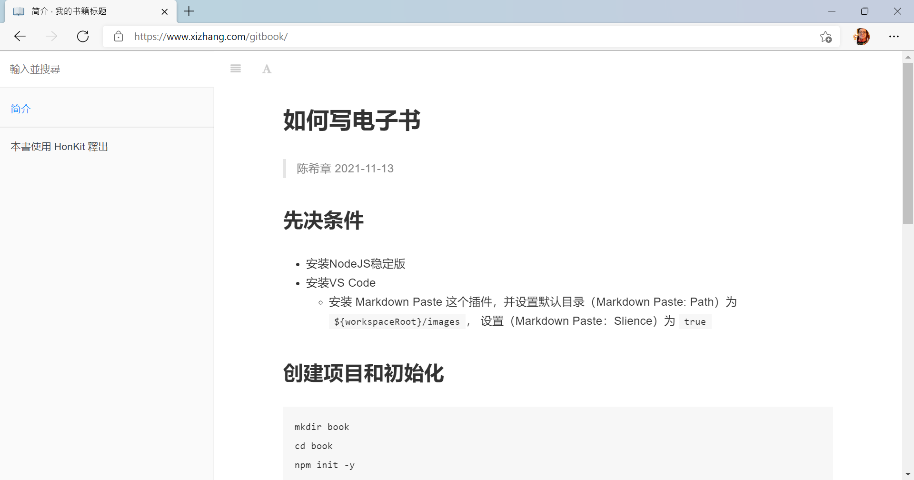

如何写电子书
陈希章 2021-11-13
先决条件
- 安装NodeJS稳定版
- 安装VS Code
- 安装 Markdown Paste 这个插件，并设置默认目录（Markdown Paste: Path）为
${workspaceRoot}/images， 设置（Markdown Paste：Slience）为true
- 安装 Markdown Paste 这个插件，并设置默认目录（Markdown Paste: Path）为
创建项目和初始化
mkdir book
cd book
npm init -y
npm install honkit --save-dev
npx honkit init
git init
code .
创建 .gitignore文件，内容如下
node_modules
_book
创建book.json文件，内容如下
{
"title": "我的书籍标题",
"author": "作者名称",
"description": "书籍的描述信息，可用于SEO",
"language": "zh"
}
撰写书籍
- SUMMARY.md 定义目录
- 其他就是按照需求编写markdown文件即可，建议不同章节用文件夹分开
- 图片粘贴，请用 CTRL+ALT+V 即可，会自动在根目录下面的images目录
发布到Github pages
- 创建一个public的仓库
- 在 https://github.com/settings/tokens 创建一个token，要选中
repo这个权限，设置不要过期，并且复制好这个token - 在你刚创建的仓库中，导航到 <你的仓库地址/settings/secrets/actions>，定义这个token作为密钥，命名为
GITBOOK - 创建远程仓库链接
git remote add origin 你的仓库地址 - 提交更新到Github
git add ., 然后git commit -m '初始化', 最后git push origin master 创建一个Github Action，内容如下
# This is a basic workflow to help you get started with Actions name: publish gitbook to pages # Controls when the workflow will run on: # Triggers the workflow on push or pull request events but only for the master branch push: branches: [ master ] pull_request: branches: [ master ] # Allows you to run this workflow manually from the Actions tab workflow_dispatch: # A workflow run is made up of one or more jobs that can run sequentially or in parallel jobs: # This workflow contains a single job called "build" build: # The type of runner that the job will run on runs-on: ubuntu-latest # Steps represent a sequence of tasks that will be executed as part of the job steps: # Checks-out your repository under $GITHUB_WORKSPACE, so your job can access it - uses: actions/checkout@v2 # Runs a single command using the runners shell - name: Install & Build run: | npm install npm run build - name: Deploy uses: peaceiris/actions-gh-pages@v3 with: github_token: $ publish_dir: ./_book保存这个Action后，它会先自动运行一次，你稍后就可以在 <你的仓库地址/settings/pages> 查看所生成的Github pages网站信息了。例如当前这个模板网站，运行效果如下

到这里为止，我们就完整地了解了如何编写电子书并且持续发布的流程了，更多细节还可以参考 https://honkit.netlify.app/